반도체 공정 빅데이터 9종 — 탐색적 분석(EDA)과 시각화
조은숙 · 데이터 분석 포트폴리오 · 2026-11
반도체 공정에서 나오는 공개 데이터 9종을 형태별로 하나씩 분석했습니다. 형식이 서로 다른 데이터(표, 시계열, 위치 계측, 스펙트럼, 웨이퍼맵, 이미지, 초분광 큐브, 원자 구조, LLM 추출 텍스트)를 직접 읽고, 데이터 품질 문제를 찾고, 공정에서 의미 있는 패턴을 시각화하는 것이 목표입니다. 각 데이터는 구조 → 발견 → 사용한 기법 → 한계와 다음 단계 순서로 정리했습니다.
Python pandas NumPy matplotlib scikit-learn 분류 모델 · 불균형 평가 PCA T²·SPE 이상 탐지 교차검증 설계 이진·ENVI·XYZ 파일 파싱 데이터 품질 진단 공정 데이터 해석
한눈에 보기 ① 요약표 ② 센서 시계열 ③ 위치별 계측 ④ 스펙트럼 ⑤ 웨이퍼맵 ⑥ SEM 이미지 ⑦ 초분광 ⑧ 원자 구조 ⑨ 문헌 DB 모델 A 불량 분류 모델 B 이상 탐지 접근 방법 요약
한눈에 보기
# 데이터 형태 규모(실제 확인) 핵심 발견 다음 분석 ① 웨이퍼 단위 요약표 (AlCu PVD) 웨이퍼 5,208장 × 178개 열 불량률 6.4%, 장비별 2.8~9.7%로 차이 큼. 두께와 단일 변수 상관은 |r|≤0.32로 약함 모델 A 로 진행② 센서 시계열 (LAM 9600) 웨이퍼 129장, 19개 센서, 웨이퍼당 약 100시점 불량 21장 중 상당수가 정상 범위 안에 있음. 정상 웨이퍼가 실험 차수 3개로 군집을 이룸 모델 B 로 진행③ 위치별 계측 (Bosch 식각) 웨이퍼 88장 × 89개 지점 = 7,832행 가장자리가 중심보다 4.6 깊게 식각됨. 로트 안에서 처리 순서가 뒤로 갈수록 깊이가 줄어듦 웨이퍼맵 보간, 균일도 지표 ④ 스펙트럼·깊이 프로파일 (ToF-SIMS) 시료 4개, 프로파일 8개, 스펙트럼 4개 측정된 ¹⁸O 비율 최대값이 명목값과 비슷함(46.8 / 24.4 / 17.3 / 11.9%) 피크 적분, 층 경계 검출 ⑤ 웨이퍼맵 (MixedWM38) 52×52 맵 190장 (전체 38,015장의 샘플) 결함 패턴 8종이 여러 개 겹쳐 붙은 다중 라벨 구조(38가지 조합) CNN 다중 라벨 분류 ⑥ SEM 이미지 (Carinthia) 480×480 흑백, 라벨표 4,591건 / 이미지 50장 클래스 3이 87%를 차지하고 가장 많은 클래스와 가장 적은 클래스의 비가 약 1,000배 불균형 처리, 전이학습 ⑦ 초분광 큐브 (4H-SiC) 3개 파장 영역, 103~450개 밴드 가시광 영역에 간섭 피크가 있고, 10 μm 부근에서 반사율이 다시 오름 픽셀 스펙트럼 군집, 밴드 선택 ⑧ 원자 구조 (SAIT MLFF) 구조 71,409개 (HfO·SiN) SiN의 OOD 세트는 학습 세트와 에너지 분포가 뚜렷하게 다름 분포 이동(OOD) 평가 ⑨ 측정값이 아닌 자료 (ALD 문헌 DB) 논문 597편, 추출 항목 3,884건 두 LLM 추출값의 일치율 72%. 전구체 항목이 57.6%로 가장 낮고, 주로 표기 차이 때문 텍스트 정규화, 품질 검증
1 웨이퍼 단위 요약표 — Infineon AlCu PVD형태: 1행 = 웨이퍼 1장인 정형 표 · 구분자 ; · 1행이 제목줄이라 skiprows=1 필요
5,208 웨이퍼(행)
178 열 (공정 변수 + 측정값 + 품질)
6.43% 전체 불량률 (335장)
152.09 ± 2.49 평균 막 두께 mean_thickness
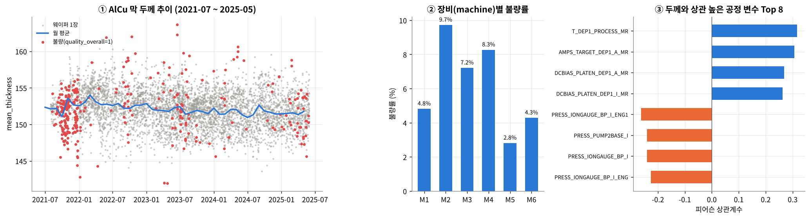
① 2021-07-31 ~ 2025-05-31 막 두께 추이(빨강 = 불량) ② 장비 6대 불량률 ③ 공정 입력 변수 중 두께와 상관이 큰 8개 (측정 원값 RAW_VALUE_*는 결과값이라 제외)
발견
불량은 대부분 비저항(resistivity) 불량 입니다(295건). 두께 불량은 12건뿐입니다.
2021년 하반기 초기 구간에 불량이 몰려 있고, 이때 두께도 낮은 쪽으로 치우쳐 있습니다.
장비 M2는 9.7%, M5는 2.8%로 불량률이 3배 넘게 차이 납니다.
두께와 상관이 가장 큰 변수도 r=0.32 정도여서, 변수 하나로는 두께를 설명하기 어렵습니다.
사용한 기법 · 판단
데이터 누수 차단: RAW_VALUE_*와 mean_resistance는 측정 결과라서 상관 분석에서 뺐습니다. 이 열을 넣으면 두께와의 상관이 0.9 가까이 나와 결과가 부풀려집니다.월별 집계와 개별 점을 겹쳐 그려 장기 추세와 불량 위치를 한 그림에 보였습니다.
다음 단계 → 모델 A: 다변량 분류 모델 3종으로 불량 예측을 시도했습니다.
2 센서 시계열 — LAM 9600 금속 식각형태: 긴 형식(long) 시계열 · 1행 = 웨이퍼 × 시점 · 메타데이터 표와 wafer_id로 연결
129 웨이퍼 (정상 108 / 불량 21)
19 센서 변수
20 불량 종류 (TCP +50, RF −12 등)
12,829 시계열 행
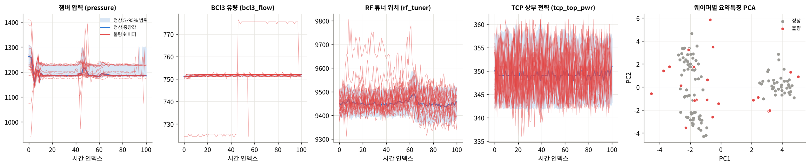
파란 띠 = 정상 웨이퍼 107장의 시점별 5~95% 범위, 빨강 = 불량 웨이퍼. 오른쪽 = 웨이퍼별 센서 평균·표준편차 38개 특징의 PCA. 기록이 3시점뿐인 웨이퍼 l3125는 제외했습니다.
발견
불량 중 BCl3 유량 ±5~10, 압력 변화 같은 일부 불량은 그래프에서 바로 보입니다.
TCP·RF 전력 불량은 정상 범위 안에 묻혀서 눈으로는 구분되지 않습니다.
PCA에서 정상 웨이퍼도 여러 군집 으로 나뉩니다. 모델링 단계에서 정상만 따로 그려 보니 실험 차수(l29·l31·l33) 3개와 정확히 일치했습니다(아래 모델 B).
정상과 차이가 가장 큰 특징: bcl3_flow 표준편차, rf_tuner 표준편차, pressure 표준편차
사용한 기법 · 판단
정상 웨이퍼 107장의 시점별 분위수(5·50·95%)로 기준 띠 를 만들고 불량 웨이퍼를 겹쳐 그렸습니다. 129장 선을 모두 겹치면 읽을 수 없어서 바꾼 방식입니다.
품질 점검에서 기록이 3시점뿐인 웨이퍼를 찾아 제외했습니다.
웨이퍼별 요약 특징 38개를 표준화한 뒤 PCA로 2차원에 투영했습니다.
다음 단계 → 모델 B: 공정 단계(step)별 요약 특징과 PCA T²·SPE 다변량 관리도로 불량 탐지율을 비교했습니다.
3 위치별 계측 — Fraunhofer Bosch 식각형태: 1행 = 웨이퍼의 한 측정 지점(X, Y 좌표 μm) · 200 mm 웨이퍼, 웨이퍼마다 89개 지점
88 × 89 웨이퍼 × 지점
43.67 평균 Si 식각 깊이 (범위 28.65~52.78)
+4.63 가장자리(r>70mm) − 중심(r<30mm)
≈ 67 선택비 (Si 식각 ÷ 산화막 식각)
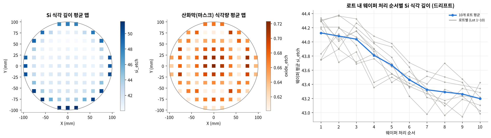
왼쪽 두 그림 = 88장 평균 웨이퍼 맵(사각형 1개 = 측정 지점). 오른쪽 = 로트(10개) 안에서 웨이퍼 처리 순서별 평균 Si 식각 깊이
발견
Si 식각은 가장자리가 깊고 , 마스크(산화막) 식각은 중심이 큽니다 . 두 패턴이 반대입니다.
웨이퍼 안의 변동계수(CV)는 평균 8.3%입니다.
로트 안에서 1번째 웨이퍼 44.13 → 10번째 43.20으로 깊이가 꾸준히 줄어듭니다(챔버 드리프트).
postox_thickness_nan에는 결측이 157개 있습니다. 사용한 기법 · 판단
X·Y 좌표를 지점별로 평균해 웨이퍼 맵 으로 그렸습니다.
반지름 파생 변수 r = √(X²+Y²)로 중심과 가장자리를 수치로 비교했습니다.
처음에는 실험 키(experiment_key)를 로트로 보고 묶었는데, 이 값이 웨이퍼마다 달라서 lot_number 기준으로 다시 묶었습니다.
한계와 다음 단계: Lot_status.xlsx의 컨디셔닝 조건(1·3·9회 × chuck/Si/SiO2)과 결합해 조건별 드리프트 차이를 검정할 수 있습니다.
4 스펙트럼·깊이 프로파일 — ORNL ToF-SIMS WOx형태: 탭 구분 TSV · #로 시작하는 메타데이터 머리말 · 압축 파일 안에 압축 파일(exports_WOx.zip)
4 시료 (¹⁸O 표지층 비율 50 / 25 / 16.7 / 12.5%)
8 깊이 프로파일 (시료당 크레이터 2개)
44 이온 × 펄스 폭 열
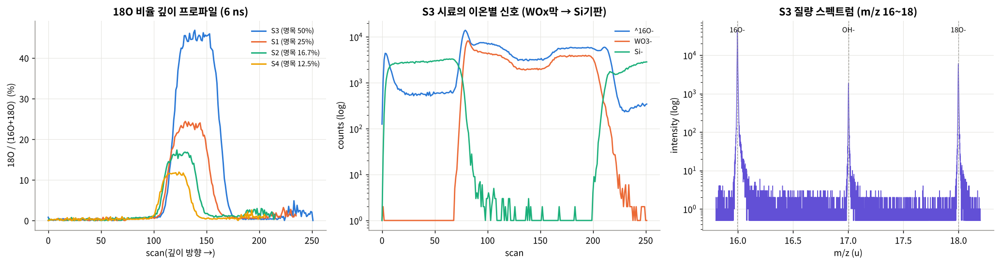
왼쪽 = 깊이 방향 ¹⁸O 비율(6 ns 측정) · 가운데 = S3 시료의 이온별 신호(로그) · 오른쪽 = S3 질량 스펙트럼, ¹⁶O⁻·OH⁻·¹⁸O⁻ 피크
발견
¹⁸O 비율 최댓값이 S3 46.8%, S1 24.4%, S2 17.3%, S4 11.9%로 명목값 순서와 크기에 잘 맞습니다.
가운데 그림에서 표면 → WOx막(WO₃⁻ 신호) → Si 기판(Si⁻ 신호 증가)의 층 구조 가 드러납니다.
스펙트럼은 세로축을 로그로 그려야 세 피크가 함께 보입니다(신호 크기가 10⁴배 차이).
사용한 기법 · 판단
압축 파일 안의 압축 파일을 풀고, # 메타데이터 머리말을 건너뛰며 TSV를 읽었습니다.
열 이름 규칙(이온_펄스폭_슬롯)을 해석해 ¹⁸O/(¹⁶O+¹⁸O) 비율을 깊이별로 계산했습니다.
신호 크기가 10⁴배 차이 나서 이온 신호와 스펙트럼은 로그 축으로 그렸습니다.
한계와 다음 단계: 6 ns 측정 하나만 썼습니다. 펄스 폭별(4·6·9 ns) 결과를 비교하고 표지층 경계를 자동으로 찾는 것이 다음 단계입니다.
5 웨이퍼맵 — MixedWM38 (혼합 결함 패턴)형태: NumPy 배열(.npz) · arr_0 = (190, 52, 52) 맵, arr_1 = (190, 8) 다중 라벨(원-핫)
190 샘플 (조합당 5장)
38,015 원본 전체 맵 수
8 → 38 기본 패턴 → 혼합 조합
0/1/2 픽셀: 바깥 / 정상 다이 / 결함 다이
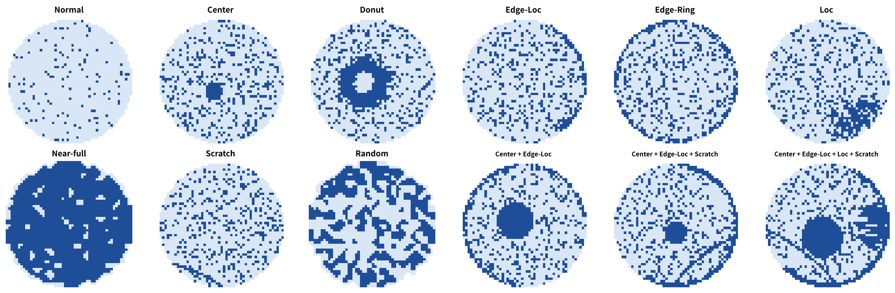
윗줄~아랫줄 앞부분 = 정상과 기본 패턴 8종, 마지막 3장 = 결함 2·3·4종이 겹친 혼합 패턴 예시 (연파랑 = 정상 다이, 진파랑 = 결함 다이)
발견
한 웨이퍼에 결함 종류가 0~4개 붙습니다(샘플 기준 0개 5장, 1개 40장, 2개 65장, 3개 60장, 4개 20장).
Near-full(149장)과 Random(866장)은 원본에서도 수가 적습니다.
값 3인 픽셀이 2장에 8개 있습니다. 원본 설명에 없는 값이라 확인이 필요합니다.
사용한 기법 · 판단
라벨 비트 순서(Center, Donut, Edge-Loc, Edge-Ring, Loc, Near-full, Scratch, Random)를 원본 개수(Near-full 149, Random 866)와 맞춰 교차 검증 했습니다.
패턴마다 대표 맵을 자동으로 골라 그리고, 결함 2·3·4종 혼합 예시를 함께 보였습니다.
한계와 다음 단계: 샘플 190장은 학습에 부족합니다. 원본 38,015장으로 다중 라벨 CNN(sigmoid 출력 8개)을 학습하는 것이 다음 단계입니다.
6 SEM 이미지 — Infineon Carinthia 결함 분류형태: 480×480 흑백 JPG + 라벨표(구분자 ;, UTF-8 BOM) · 이미지는 샘플 50장만 포함
4,591 전체 라벨
87% 클래스 3 비중 (4,008건)
≈ 1,000 : 1 최다 : 최소 클래스 (4,008 : 4)
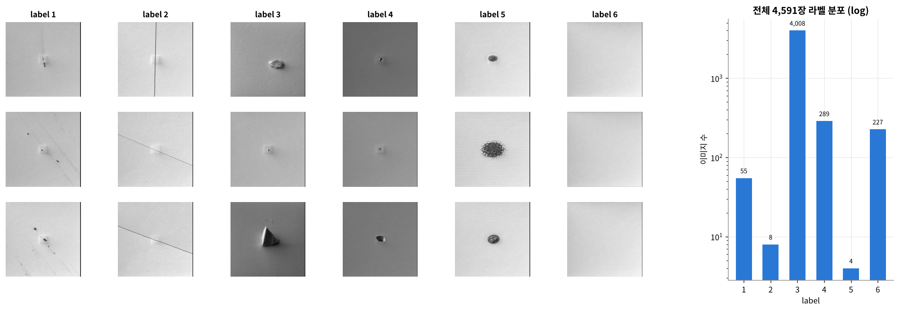
라벨별 예시 3장과 전체 라벨 분포(세로축 로그) 라벨 1~6의 공식 의미는 함께 제공된 파일에 없습니다. 이미지로 보면 1 = 흩어진 입자·긁힘, 2 = 긴 선, 3 = 큰 입자, 4 = 작은 입자, 5 = 둥근 얼룩, 6 = 결함 없음으로 보이지만, 이는 외관 관찰에 따른 추정 입니다.
발견
클래스 불균형이 극단적입니다. 모든 이미지를 3이라고 예측해도 정확도(accuracy)가 87%가 나옵니다.
사진마다 밝기와 대비가 크게 다릅니다(클래스 4 예시가 어두움) → 정규화가 필요합니다.
사용한 기법 · 판단
라벨별 예시를 한 화면에 늘어놓고 분포를 로그 축으로 그려 불균형을 드러냈습니다.
라벨 의미가 문서에 없어서, 외관 관찰은 추정 으로 따로 표시했습니다.
한계와 다음 단계: 분류 모델을 만든다면 정확도 대신 클래스별 F1과 혼동행렬로 평가하고, 가중치 손실과 증강으로 소수 클래스를 보완해야 합니다.
7 초분광 큐브 — 4H-SiC (VNIR+SWIR / MWIR / LWIR)형태: ENVI 형식(.hdr 텍스트 머리말 + .dat 이진 float32, BSQ 배열) · 3차원 = 밴드 × 행 × 열
영역 크기 (열×행 px) 밴드 수 파장 범위 VNIR+SWIR 40 × 76 450 0.38 ~ 2.50 μm MWIR 89 × 85 308 2.71 ~ 5.28 μm LWIR 79 × 89 103 7.64 ~ 12.32 μm
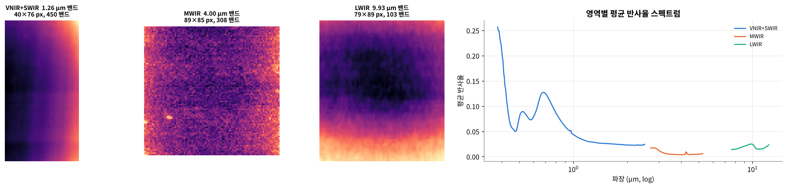
각 영역의 가운데 밴드 영상과 전체 픽셀 평균 반사율 스펙트럼(가로축 로그)
발견
가시광 영역에서 0.5 μm, 0.7 μm 부근에 피크가 있습니다. 20 μm 에피층에 따른 박막 간섭으로 보이며, 이는 추정입니다.
LWIR에서는 10 μm 부근에서 반사율이 다시 오릅니다.
밴드 영상에서 가장자리·하단이 밝게 나와 시료와 배경이 섞여 있습니다 → 관심 영역(ROI)을 잘라 분석해야 합니다.
Sample description.csv에는 시료 18종이 있지만, 이번에 분석한 큐브는 4H-SiC 하나입니다. 사용한 기법 · 판단
ENVI 헤더를 정규식으로 직접 파싱하고 np.fromfile().reshape(밴드, 행, 열)로 큐브를 읽었습니다. 전용 라이브러리 없이 읽었고, 파일 크기와 차원 곱이 일치하는 것도 확인했습니다.
파장 범위가 다른 세 큐브를 로그 파장축 하나에 이어 그렸습니다.
한계와 다음 단계: 평균에 배경 픽셀이 섞여 있습니다. 픽셀 스펙트럼을 K-means로 군집해 시료 영역만 분리한 뒤 다시 평균을 내는 것이 다음 단계입니다.
8 원자 구조 — SAIT MLFF (HfO · SiN)형태: 구조별 요약 CSV + 확장 XYZ(원자 종류, 좌표 Å, 힘 eV/Å) · 라이선스 CC BY-NC-SA 4.0
물질 Train Valid Test OOD 원자 수 HfO 27,960 3,510 3,510 6,996 96 SiN 22,510 2,822 2,866 1,235 48 (OOD 105)
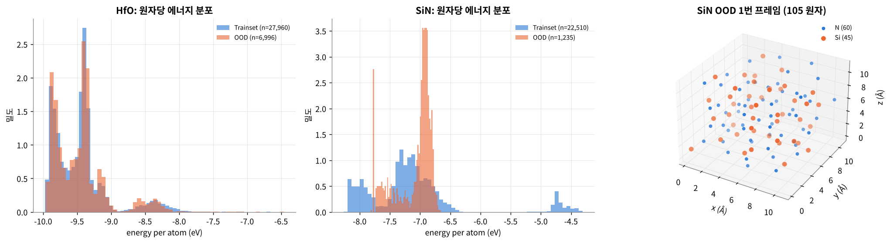
학습(Train) vs 분포 밖(OOD) 세트의 원자당 에너지 분포와 SiN OOD 첫 프레임의 원자 배치(Si 45, N 60)
발견
HfO는 Train과 OOD의 에너지 분포가 거의 겹칩니다.
SiN은 OOD가 −6.9 eV 근처에 몰려 있고 학습 세트와 모양이 다릅니다. 원자 수(105 vs 48)도 달라서 일반화 시험 용 세트임이 드러납니다.
첫 프레임의 원자당 힘은 최대 0.16 eV/Å로, 거의 안정된 구조입니다.
사용한 기법 · 판단
분할(Train/OOD)별 원자당 에너지 밀도 히스토그램을 겹쳐 분포 이동 을 확인했습니다.
확장 XYZ 형식을 직접 파싱해 원자 배치를 3D로 그리고 원자별 힘을 계산했습니다.
한계와 다음 단계: 요약 통계만 봤습니다. 원자 환경 기술자(예: SOAP)로 Train과 OOD 구조를 비교하면 분포 차이의 원인을 더 구체적으로 볼 수 있습니다.
9 측정값이 아닌 자료 — ALD 공정 문헌 DB형태: 논문(DOI) × 항목별로 두 LLM(운영 모델 vs Gemma)이 추출한 값과 일치 여부
597 논문(DOI)
3,884 추출 항목
72.0% 전체 일치율
57.6% 최저: 전구체(precursor)
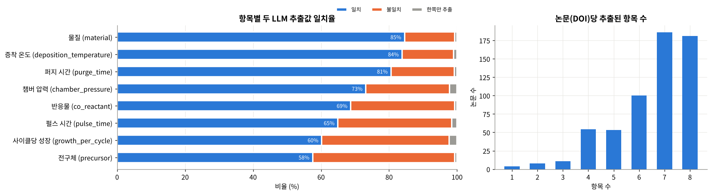
항목별 일치·불일치·한쪽만 추출 비율과 논문당 추출된 항목 수
항목 모델 A 모델 B 판정 왜 불일치? precursor Mo(NMe2)4 tetrakis(dimethylamido)-molybdenum 불일치 같은 물질, 약어 vs 정식 명칭 co_reactant CH3COOH acetic acid 불일치 화학식 vs 이름 growth_per_cycle 0.8 Å/cycle 0.08 nm/cycle 일치 단위 환산이 반영됨 deposition_temperature 200 °C | 250 °C 200 °C 불일치 한쪽이 조건을 하나 빠뜨림
발견
물질·온도처럼 표기가 단순한 항목은 일치율이 84~85%입니다.
전구체·반응물 불일치의 상당수는 값이 틀려서가 아니라 표기가 달라서 생깁니다.
사용한 기법 · 판단
항목별 일치·불일치 비율을 100% 누적 막대로 비교했습니다.
불일치 사례를 직접 살펴보고, 값 오류와 표기 차이로 구분했습니다.
한계와 다음 단계: 화학명 동의어 사전과 단위 통일 규칙을 적용해 정규화 전후 일치율을 비교하면, LLM 추출의 실제 오류율을 더 정확히 추정할 수 있습니다.
A 모델링 A — AlCu PVD 웨이퍼 불량 예측문제: 공정 중 기록되는 장비 변수만으로 측정 전에 불량 웨이퍼를 미리 골라낼 수 있는가? · 대상: quality_overall (불량 = 1)
설계 내용 입력 공정 변수 + 장비 원-핫 인코딩, 134개. 측정 결과(RAW_VALUE_*, 두께·저항 평균, 품질 판정)와 식별자는 제외했습니다. 분할 시간 순서 로 나눴습니다. 2024-05-16 이전 3,906장(불량 7.35%)으로 학습하고, 이후 1,302장(불량 3.69%)으로 시험했습니다.모델 로지스틱 회귀(규제), 랜덤 포레스트, 그래디언트 부스팅 — 세 모델 모두 클래스 가중치로 불균형을 보정했습니다. 지표 불량이 드물어서 정확도 대신 ROC-AUC, PR-AUC, 상위 10% 포착률을 썼습니다.
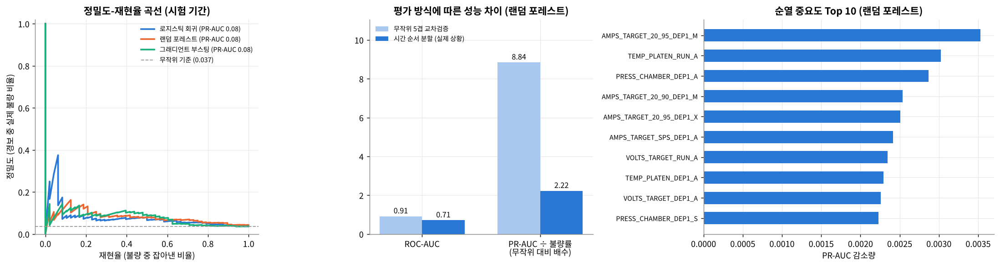
왼쪽 = 시험 기간 정밀도-재현율 곡선 · 가운데 = 같은 모델을 무작위 교차검증과 시간 순서 분할로 평가했을 때의 차이 · 오른쪽 = 시험 기간 순열 중요도
모델 (시험 기간) ROC-AUC PR-AUC 상위 10% 검사 시 불량 포착률 로지스틱 회귀 0.665 0.082 21% 랜덤 포레스트 0.707 0.082 25% 그래디언트 부스팅 0.647 0.079 25% 무작위 기준 0.500 0.037 10%
결과
가장 나은 랜덤 포레스트는 위험 상위 10% 웨이퍼만 검사해도 불량의 25%를 잡아냅니다. 무작위로 검사할 때(10%)의 약 2.5배 입니다.
다만 PR-AUC 0.08은 실무에 바로 쓰기에는 낮은 수준입니다. 공정 변수만으로는 불량 신호가 약합니다.
중요 변수는 타깃 전류(AMPS_TARGET), 플래튼 온도, 챔버 압력 계열입니다. 다만 순열 중요도가 모두 0.004 미만이어서, 특정 변수 하나가 지배하지는 않습니다.
핵심 교훈: 평가 방식이 결과를 바꾼다
같은 모델을 시간을 무시한 무작위 교차검증 으로 평가하면 ROC-AUC 0.91, PR-AUC가 무작위의 8.8배로 나옵니다.
실제 상황처럼 과거로 학습해 미래를 예측하면 0.71, 2.2배로 떨어집니다.
인접한 시기의 웨이퍼끼리 비슷하고(2021년 하반기 불량 집중), 시험 기간에는 불량률이 절반으로 줄어 분포가 이동 했기 때문입니다. 무작위 분할만 했다면 성능을 크게 과대평가했을 것입니다.
다음 단계: 시간 이동 창(rolling) 재학습, 장비별 모델, 두께·비저항을 먼저 회귀로 예측한 뒤 규격 판정하는 2단계 접근
B 모델링 B — LAM 9600 식각 불량 이상 탐지문제: 정상 웨이퍼만 보고 배운 모델로, 처음 보는 불량(가스 유량·전력·압력 변화)을 찾아낼 수 있는가?
설계 내용 특징 센서 19개 × 공정 단계(step 4, 5) × 평균·표준편차 = 76개. 단계를 나눠 시간 구조를 일부 남겼습니다. 방법 ① 단변량 max|z| (특징 중 하나라도 벗어나면 경보) ② PCA T² (모델 공간 안에서 먼 정도) ③ PCA SPE (모델이 설명 못 하는 잔차) — PCA는 설명분산 80% 관리한계 정상 점수의 95% 분위입니다. 학습 데이터 자체로 정하면 SPE 오경보율이 90% 넘게 나와서, 교차검증 바깥(out-of-fold) 점수 로 한계를 정하도록 바꿨습니다. 평가 오경보율 = 정상 107장의 중첩 5겹 교차검증 · 탐지율 = 불량 21장 (학습에 전혀 쓰지 않음)
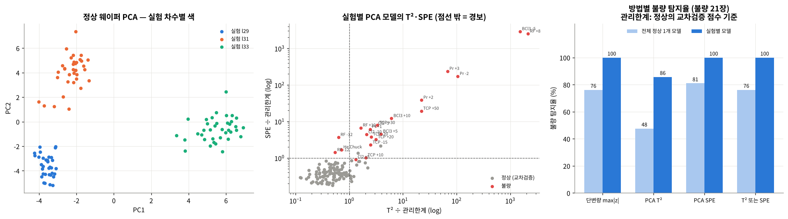
왼쪽 = 정상 웨이퍼 PCA, 실험 차수 3개로 뚜렷이 나뉨 · 가운데 = 실험별 모델의 T²·SPE 점수(관리한계로 나눈 값) · 오른쪽 = 모델 하나 vs 실험별 모델의 탐지율
방법 정상 전체로 모델 1개 실험 차수별 모델 오경보율 탐지율 오경보율 탐지율 단변량 max|z| 7.5% 76% (16/21) 9.3% 100% (21/21) PCA T² 10.3% 48% (10/21) 21.5% 86% (18/21) PCA SPE 3.7% 81% (17/21) 2.8% 100% (21/21) T² 또는 SPE 6.5% 76% (16/21) 12.1% 100% (21/21)
결과
실험 차수별 PCA SPE 모델이 오경보 2.8%로 불량 21장을 모두 찾았습니다.
BCl3 −5, RF +8, 압력 ±2~3 같은 불량은 관리한계의 100~3,000배로 크게 벗어납니다. TCP +10, Cl2 −5, He Chuck은 한계 근처여서 가장 찾기 어렵습니다.
T²보다 SPE가 잘 맞습니다. 불량이 정상 변동의 "크기"를 키우기보다, 센서 사이의 상관 구조를 깨뜨리기 때문으로 해석됩니다.
핵심 교훈: 기준선을 어떻게 잡느냐
EDA에서 본 군집이 실험 차수였습니다. 세 실험을 하나의 "정상"으로 묶으면 정상 범위가 넓어져서 SPE 탐지율이 81%에 그칩니다. 실험별 기준선 을 쓰면 100%로 올라갑니다.
관리한계를 학습 데이터로 정하면 SPE 오경보율이 90%를 넘었습니다. 표본이 적을수록(실험당 정상 약 35장) 교차검증으로 정한 한계가 꼭 필요합니다.
한계: 불량이 21장뿐이고, 같은 데이터에서 방법을 골랐기 때문에 실제 성능은 이보다 낮을 수 있습니다. 새 실험 차수가 시작될 때 기준선을 다시 잡는 절차도 필요합니다.
접근 방법 요약
과제 해결 방법 해당 데이터 형식이 제각각인 파일 읽기 구분자·BOM·머리말 처리, 압축 파일 안의 압축 파일, ENVI 이진, 확장 XYZ, NPZ를 모두 표준 라이브러리로 직접 파싱 ①④⑥⑦⑧⑤ 데이터 품질 문제 찾기 비정상적으로 짧은 기록, 결측 157건, 문서에 없는 픽셀 값(3), 잘못 묶인 키 발견 후 수정 ②③⑤ 결과가 부풀려지는 것 막기 측정 결과 열을 입력에서 빼서 데이터 누수 차단, 시간 순서 분할로 평가, 관리한계를 교차검증 바깥 점수로 결정 ① 모델 A·B 복잡한 데이터를 읽히게 그리기 선 129개 대신 분위수 띠, 좌표를 웨이퍼 맵으로, 로그 축, 100% 누적 막대 ②③④⑨ 확인 못 한 것은 추정으로 표시 SEM 라벨 의미, 간섭 피크 해석, 정상 웨이퍼 군집의 원인 ②⑥⑦
탐색 분석 그림 9개는 semi_eda.py, 모델 A·B는 semi_models.py로 다시 만들 수 있습니다(python 파일명 데이터폴더 figs, 난수 시드 42 고정).
데이터 출처와 라이선스